¿Qué es un árbol?
Un árbol es una estructura de datos no lineal que organiza información de forma jerárquica. Está formada por nodos unidos mediante ramas. El primer nodo se denomina raíz; los nodos conectados debajo de otro son sus hijos, y los nodos sin hijos se llaman hojas.
Raíz
Nodo inicial del árbol. No tiene padre.
Nodo
Elemento que almacena un dato y referencias hacia otros nodos.
Rama
Conexión que relaciona un nodo padre con un nodo hijo.
Hoja
Nodo que no tiene hijos.
Árbol Binario de Búsqueda (ABB)
Un ABB es un árbol binario en el que cada nodo puede tener como máximo dos hijos. Para cada nodo, las claves del subárbol izquierdo son menores y las claves del subárbol derecho son mayores. Esta propiedad permite descartar una parte del árbol en cada comparación.
¿Cómo funciona?
- La búsqueda comienza en la raíz.
- Si la clave buscada es menor, se continúa por el subárbol izquierdo.
- Si es mayor, se continúa por el subárbol derecho.
- Si coincide, el elemento fue encontrado.
- Si se llega a NULL, la clave no existe.
ALGORITMO BuscarABB(raiz, clave)
SI raiz = NULL
RETORNAR NO_ENCONTRADO
FIN SI
SI clave = raiz.dato
RETORNAR raiz
FIN SI
SI clave < raiz.dato
RETORNAR BuscarABB(raiz.izquierdo, clave)
SINO
RETORNAR BuscarABB(raiz.derecho, clave)
FIN SI
FIN ALGORITMO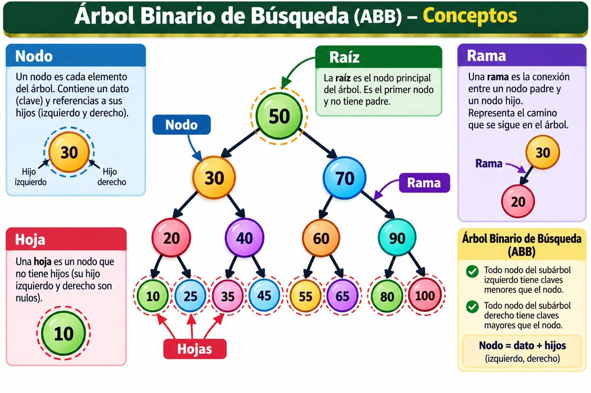
Conceptos fundamentales: nivel, altura y grado
Nivel
Distancia desde la raíz hasta un nodo. En esta página la raíz está en el nivel 0.
Altura
Número de aristas del camino más largo desde un nodo hasta una hoja.
Grado de un nodo
Número de hijos que tiene. En un árbol binario puede ser 0, 1 o 2.
Subárbol
Árbol formado por un nodo y todos sus descendientes.
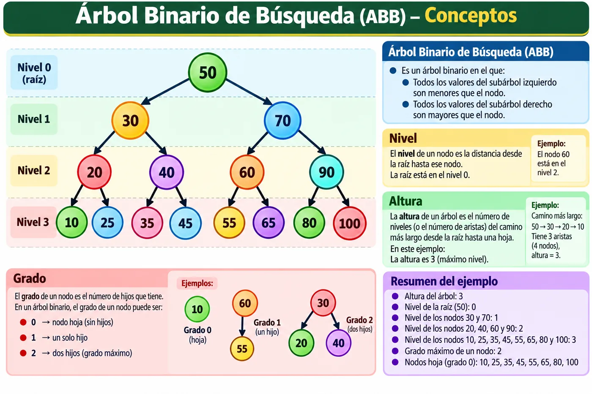
Estructura de un nodo y representación en C
Cada nodo almacena un dato y dos referencias: una al hijo izquierdo y otra al hijo derecho. Cuando un hijo no existe, su referencia apunta a NULL.

Representación básica en C
typedef struct Nodo {
int dato;
struct Nodo *izquierdo;
struct Nodo *derecho;
} Nodo;Grado de eficiencia
La eficiencia de un árbol depende en gran medida de su altura. Un ABB equilibrado permite búsquedas cercanas a O(log n); un ABB degenerado puede comportarse como una lista y caer a O(n).
| Estructura / condición | Búsqueda | Inserción | Eliminación |
|---|---|---|---|
| ABB equilibrado | O(log n) | O(log n) | O(log n) |
| ABB degenerado | O(n) | O(n) | O(n) |
| AVL | O(log n) | O(log n) | O(log n) |
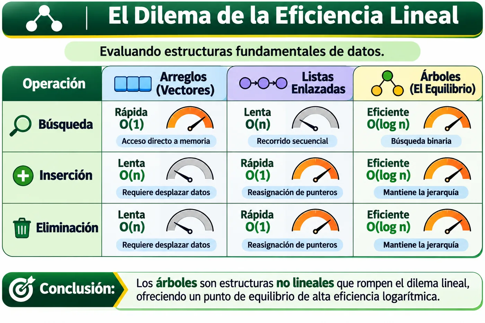
¿Dónde se usan los árboles?
Sistemas de archivos
Directorios y subdirectorios forman una jerarquía natural.
Bases de datos
Árboles de índices permiten localizar registros rápidamente.
Compiladores
Los árboles de sintaxis representan la estructura de expresiones y programas.
Redes y búsqueda
Tries, jerarquías y estructuras de decisión aparecen en enrutamiento y autocompletado.
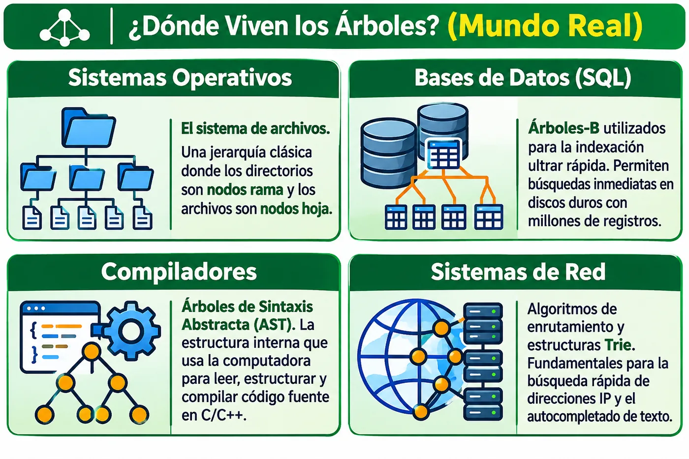
Árbol degenerado
Un árbol se considera degenerado cuando cada nodo tiene únicamente un hijo y la estructura termina pareciéndose a una lista enlazada. Esto puede ocurrir en un ABB si se insertan claves ya ordenadas.

Recorridos de un árbol
Los recorridos recursivos visitan todos los nodos. La diferencia está en el momento en que se procesa el nodo actual respecto a sus subárboles izquierdo y derecho.
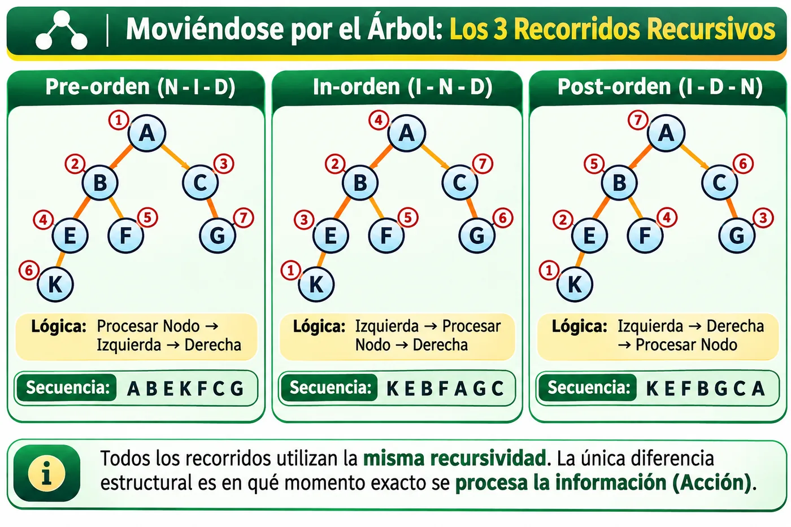
Pre-orden · N - I - D
ALGORITMO PreOrden(nodo)
SI nodo ≠ NULL
PROCESAR nodo
PreOrden(nodo.izquierdo)
PreOrden(nodo.derecho)
FIN SI
FIN ALGORITMO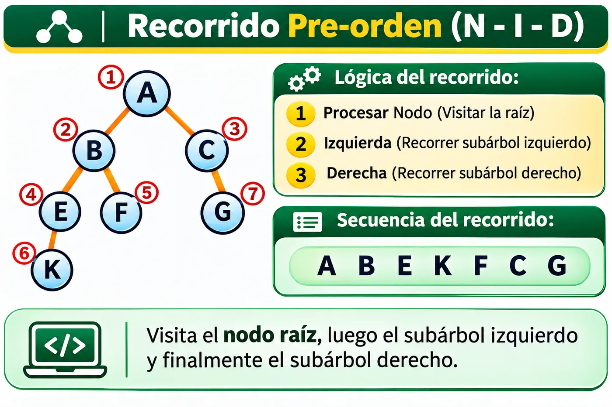
In-orden · I - N - D
ALGORITMO InOrden(nodo)
SI nodo ≠ NULL
InOrden(nodo.izquierdo)
PROCESAR nodo
InOrden(nodo.derecho)
FIN SI
FIN ALGORITMO
Post-orden · I - D - N
ALGORITMO PostOrden(nodo)
SI nodo ≠ NULL
PostOrden(nodo.izquierdo)
PostOrden(nodo.derecho)
PROCESAR nodo
FIN SI
FIN ALGORITMO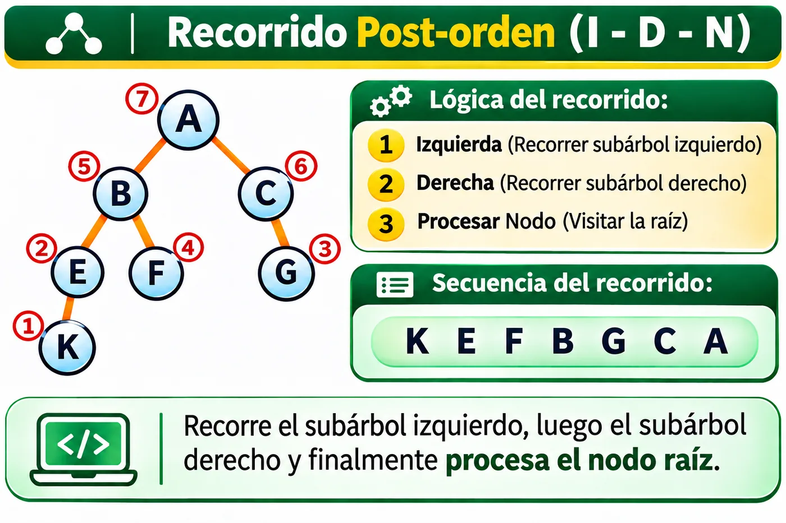
Simulador animado de recorridos
Presiona Cargar ejemplo para construir el árbol. Después selecciona un recorrido y observa cómo se visita cada nodo. El nodo actual se resalta y la secuencia se construye paso a paso.
Simulador de Árbol Binario de Búsqueda
Inserta, busca o elimina claves enteras. Después de cada operación se muestra el árbol resultante y una explicación de las comparaciones realizadas.
Árboles AVL
¿Qué son?
Un AVL es un Árbol Binario de Búsqueda autobalanceado. Después de insertar o eliminar, verifica la diferencia de alturas entre los subárboles y realiza rotaciones cuando es necesario.
Historia
Fue propuesto en 1962 por Georgy Adelson-Velsky y Evgenii Landis. Su nombre proviene de las iniciales de sus apellidos.
Eficiencia
Al controlar su altura, búsqueda, inserción y eliminación permanecen en O(log n).
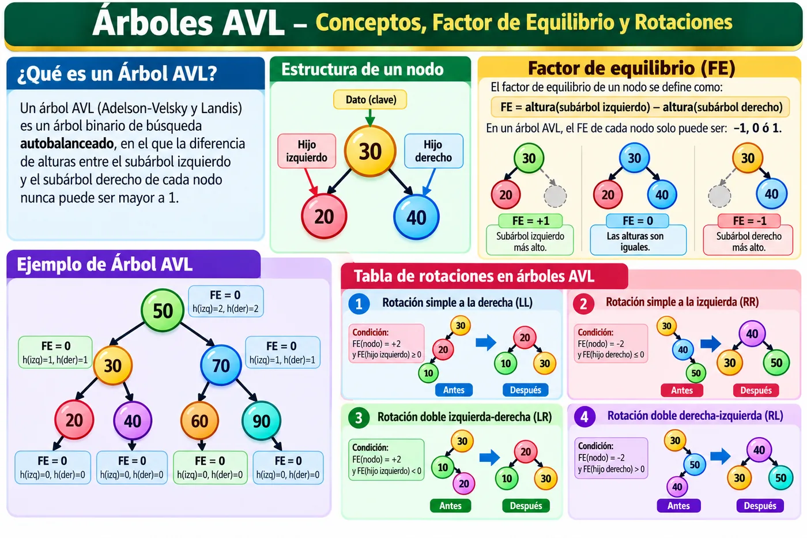
Factor de equilibrio y tabla de balanceo
En esta página utilizamos la convención:
Un nodo AVL está balanceado cuando su factor de equilibrio pertenece a { -1, 0, +1 }.
| FE del nodo | FE del hijo | Caso | Rotación requerida |
|---|---|---|---|
| +2 | ≥ 0 | LL | Rotación simple a la derecha |
| +2 | < 0 | LR | Rotación izquierda-derecha |
| −2 | ≤ 0 | RR | Rotación simple a la izquierda |
| −2 | > 0 | RL | Rotación derecha-izquierda |
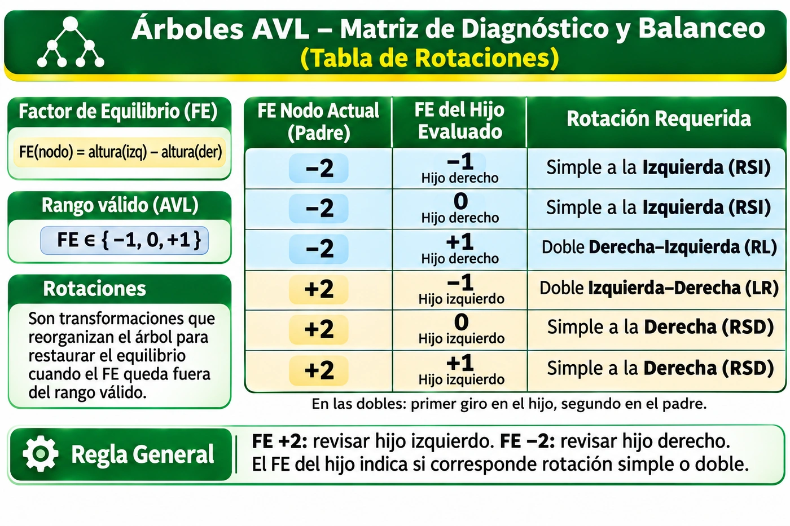
Rotaciones AVL
LL · Rotación simple a la derecha
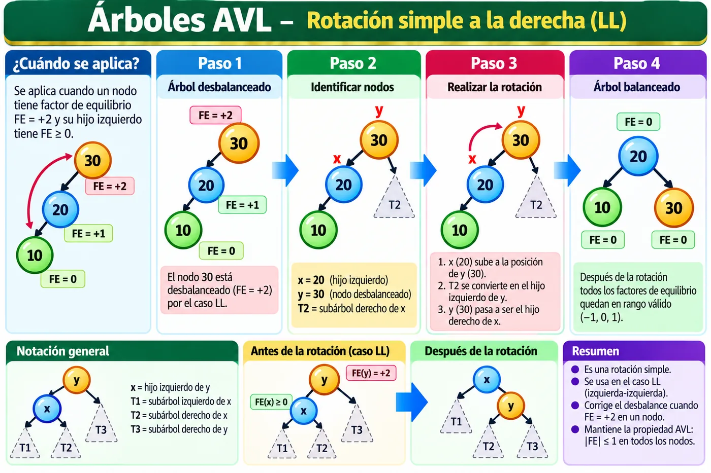
RR · Rotación simple a la izquierda
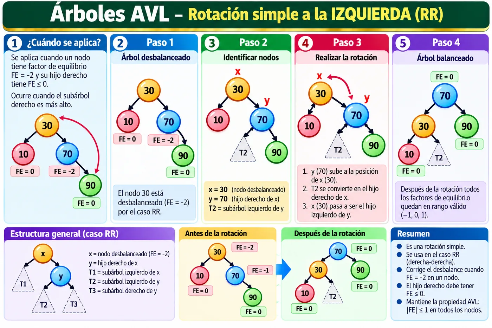
LR · Rotación doble izquierda-derecha
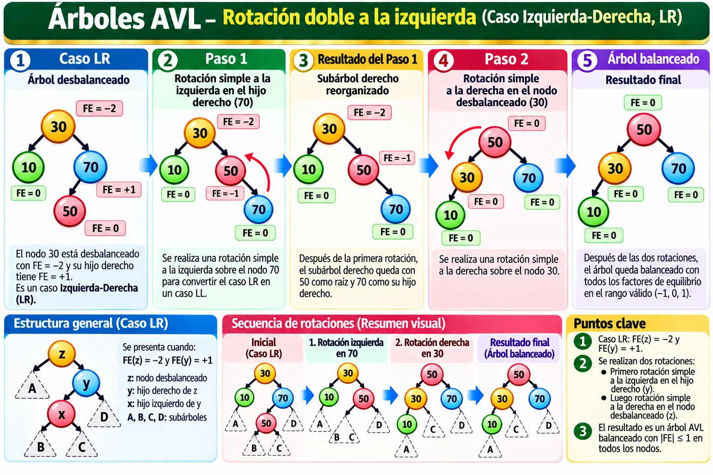
RL · Rotación doble derecha-izquierda
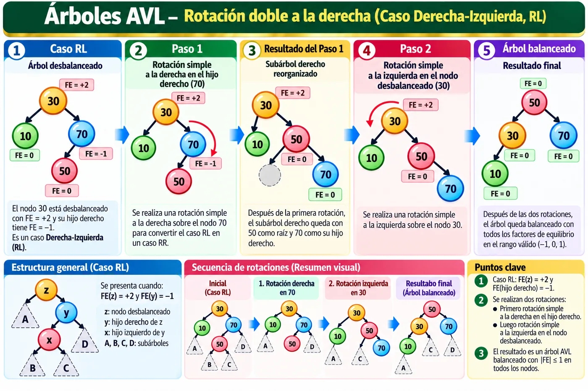
Simulador de Árbol AVL
Inserta o elimina valores. El simulador muestra las comparaciones, calcula el factor de equilibrio y explica cada rotación aplicada para recuperar el balance.
Cuestionario · Árboles y AVL
Parte A · Árboles y ABB
Parte B · Árboles AVL
Un ABB organiza claves por comparación. Su rendimiento depende de la altura. Los recorridos permiten visitar todos los nodos en distintos órdenes y los árboles AVL incorporan balanceo automático para mantener una altura logarítmica.